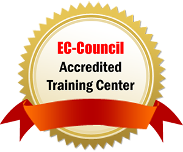

Obecajemo pomoc u pronalasku onoga sto volis
raditi i da cemo te poticati na izvrsnost -
kvalitetom programa i procesa, strastvenim
predavacima, globalno aplikabilnim znanjem te
poticanjem kvalitete zivota.
Postoje vrijednosti u koje vjerujemo od prvog
dana, koje dijele nasi predavaci, ali i nasi
polaznici, bez obzira imaju li oni 7 ili 77
godina. Pomno smo odabrali atribute koji su
odraz tih nasih vrijednosti i koji su kljucni u
kreiranju jasne i jedinstvene slike o nasem
brandu.
SPECIJALIZIRANO I KVALITETNO
Svi naši nastavni programi i procesi baziraju se na
globalnim standardima i najrelevantnijim znanjima
potrebnim za uspjeh na tržištu rada. Spajamo snažnu
teorijsku podlogu s praktičnim znanjima kako bismo
pomogli našim polaznicima da pronađu ono što vole
raditi. Koliko smo uspješni u tome najbolje pokazuje
činjenica da 100% naših studenata pronalazi posao
unutar 6 mjeseci od diplome, dok čak 85% polaznika
programa cjeloživotnog obrazovanja promijeni posao
ili napreduje u roku 3 mjeseca nakon završetka
programa.
IZBALANSIRANO
Obrazovanje za nas podrazumijeva akademsku, ali i
društvenu komponentu čovjeka. Snažno vjerujemo da je
čovjek spreman na napredak tek kada pronađe
ravnotežu u životu. Stoga kreiramo okruženje koje će
u jednakoj mjeri poticati kvalitetu obrazovanja i
ispunjen i kvalitetan život. Ulaganje u obrazovanje
uvijek znači ulaganje u sebe. Vjerujemo da upravo
upisom studija ili programa obrazovanja postižemo
balans između svakodnevnih obveza i kvalitetnog
vremena koje odvajamo za sebe.
IZVRSNO
Izvrsnost je ključna emocionalna diferencijacija
našeg branda – pomažemo našim polaznicima i
studentima da pronađu ono što vole raditi i postanu
izvrsni u tome. Našu izvrsnost dokazuju brojna
priznanja i certifikati za kvalitetu naših nastavnih
programa i procesa, ali i vrhunski strastveni
predavači koji prenose tu iskru na sve studente i
polaznike koji dođu u Algebru. Na putu do pronalaska
onog što volimo postoji onaj trenutak kad shvatimo
da mi to možemo i mi to želimo raditi, mi taj moment
nazivamo iskra, zato želimo da svi koji su dio
Algebre postanu izvrsni u onom što vole raditi
odnosno da zaiskre u Algebri.
Povijest
Zajedno gradimo povijest Algebre. Poceli smo
prije gotovo dvadeset godina i s tobom
nastavljamo put prema novim uspjesima.
Otvorili smo Algebra LAB, jedinstveni
inovacijski centar koji pomaze tvrtkama, javnim
sluzbama i start-up projektima razviti
inovativna poslovna rjesenja koja ce potaknuti
konkurentnost gospodarstva. Investicijom od cak
tri milijuna kuna, jedini u Hrvatskoj smo
objedinili tri kljucna elementa – odjel
primijenjenog istrazivanja i razvoja u
digitalnom podrucju, start-up inkubator s
coworking prostorom te inovativnu edukacijsku
platformu namijenjenu sirenju najnaprednijih
tehnoloskih i poslovnih znanja. Algebra LAB novo
je mjesto je za inovacije, kreacije, ideje i
snove o buducnosti.
1998. OSNOVANA ALGEBRA D.O.O. PODUZEĆE ZA OBRAZOVANJE
ODRASLIH
Algebra d.o.o. osnovana je u travnju 1998. godine
kao poduzeće za obrazovanje odraslih. U lipnju 1998.
bilježi prve polaznike seminara primjene računala i
računalnih aplikacija. U rujnu 1998. bilježi prvi
znatniji porast broja korisnika usluga, da bi se
kroz višeznamenkasti rast u godinama 1999. i 2000.
etablirala na tržištu edukacije odraslih, na
području korisničke primjene informacijskih
tehnologija (IT).
2000. MICROSOFT AUTHORIZED TRAINING CENTER (ATC)
Nakon dosta napora i truda uvjerili smo 2000 godine
lokalni ured Microsoft Hrvatska da zadovoljavamo
postavljene uvjete kako bismo mogli postati
autorizirani obrazovni centar za njihove
tehnologije. Ova, prva u nizu, autorizacija
distancirala nas je do drugih obrazovnih ponuđača iz
tog vremena te nam je osigurala dostup službenim
nastavnim materijalima i povoljnije uvjete
licenciranja softvera. Ovaj smo status naknadno
značajno unaprijedili kako bismo dosegli „Gold“
epitet.
2001. ADOBE, MACROMEDIA I AUTODESK TRAINING CENTER
Potaknuti uspjehom dobivanja Microsoft akreditacije,
u 2001 godini smo svu snagu uložili upravo na
zadovoljavanje uvjeta za uspostavu službenog trening
centra i za druge proizvođače te smo iste godine
postali: Macromedia Authorized Training Center Adobe
Authorized Training Provider Autodesk Authorized
Training Center i IBM Business Partner.
2002. OSNOVANO UČILIŠTE ALGEBRA
Početkom 2002. godine Algebra d.o.o. osniva Učilište
Algebra, a iste godine seli se u znatno veći i
kvalitetniji prostor u Maksimirsku 58a, Zagreb gdje
se polazincima na raspolaganje stavlja ukupno 6
učionica i oko 800 m2 uređenog obrazovnog prostora.
Prema procjenama Microsoft Hrvatska udio Algebre na
hrvatskom tržištu edukacijskih usluga za Microsoft
alate narastao je u toj godini na 30%–35%.
2003. UČLIŠTE ALGEBRA POSTALO VODEĆI PONUĐAČ OBRAZOVANJA
U IT-U
Uvođenjem niza novih programa obrazovanja odraslih u
akreditiranih kod Ministarstva zaduženog za
obrazovanje kroz nekoliko prethodnih godina, Algebra
je u 2003 u samo godinu dana sa 5. skočila na 1.
mjesto ponuđača informatičke edukacije (mjereno
prema ostvarenom prihodu i broju polaznika),
ostvarivši rast u jednoj godini poslovanja od 91,8%.
Poziciju vodećeg obrazovnog sustava u obrazovanju
odraslih držimo još i danas.
2007. VISOKO UČILIŠTE ALGEBRA DOBIVA AKREDITACIJU
Nakon više od 2 godine intenzivnih priprema, krajem
2007. je osnovana Visoka škola za primijenjeno
računarstvo koja je dopusnicu Ministarstva znanosti,
obrazovanja i sporta dobila u lipnju 2008. godine.
Ovaj događaj postavio je nove smjernice razvoja
Algebra obrazovne grupe te je na određeni način
uspješno zaokružio nastojanja za pokretanjem
visokoškolskog obrazovnog program koja su inicirana
još u 2002. godini kroz provedbu IBM ACE obrazovnog
programa. Provedba nastavnog programa započinje u
prostorijama FER-a te u zgradi Algebre u
Maksimirskoj ulici.
2013. IZVRSNI REZULTATI U EUROPSKIM PROJEKTIMA, KVALITETA I DALJE U FOKUSU
Dodatno smo proširili svoje kapacitete dodavanjem
novih učionica na adresi u Ilici, a uspješno smo
prošli i provjeru kvalitete provedbe programa u
organizaciji FER-a i do 2016. produžili certifikat
„Odobreno od FER-a“. Čitava Algebra grupa je
ocijenjena kao vodeći ECDL centar u Hrvatskoj, a
istaknuti smo i kao primjer u provedbi EU projekata
što je okrunio i posjet povjerenika EU g. Andora.
Visoko učilište Algebra od ove godine ima novi
logotip i vizualni identitet.
2015. STUDIJ DIGITALNOG MARKETINGA - PONOVNO POMIČEMO GRANICE
Nakon dvije godine intenzivnih priprema te
provedenog postupka inicijalne akreditacije, Visoko
učilište Algebra dobilo je u siječnju 2015.
dopusnice novi preddiplomski i diplomski Studij
digitalnog marketinga, prvi u ovom dijelu Europe.
Znamo da je još mnogo toga što treba napraviti
ispred nas. Znamo da se tek ponekad smijemo okrenuti
i pogledati unazad kako bismo se prisjetili lijepih
trenutaka koji su obilježili naših skoro 20 godina
rada. Hvala Vam što ste u nas vjerovali sve ove
godine i pomogli nam da rastemo.
2016. POKREĆEMO MBA E-LEADERSHIP STUDIJ – DOING BUSINESS
IN DIGITAL ECONOMY
U svoj sustav pripojili smo jednu od prvih hrvatskih
poslovnih škola: International Graduate Business
School (IgBS Zagreb) a u svoj program uvodimo i
diplomski MBA studij eLeadershipa (eVođenja) na
engleskom jeziku. Ovaj studij u većem dijelu izvode
nastavnici s University of Indiana, Kelley School of
Business, jedne od pet vodećih američkih poslovnih
škola prema uglednom poslovnom časopisu Bloomberg,
dok su pojedine specifične teme rezervirane za
hrvatske i europske profesore.
Algebra grupa
Algebra grupa je vodeci hrvatski i regionalni
privatni obrazovni sustav prisutan u 30 gradova
diljem Republike Hrvatske, s vise od 120 stalno
zaposlenih i vise od 400 vanjskih suradnika.
Kroz proteklih gotovo 20 godina rada, Algebra je
postala najznacajniji regionalni edukacijski
partner tvrtki Microsoft, Cisco, Adobe,
Autodesk, ecdl, VMware, ec-council i drugih. U
obrazovanju odraslih skolujemo oko 18.000
polaznika seminara i programa obrazovanja
godisnje, dok u visokom obrazovanju upisujemo
svake godine vise od 300 novih studenata.
Kvalitetu poslovanja Algebre prepoznali su kako
nasi klijenti tako i svi znacajniji proizvodaci
softvera, a dokazuje ga i implementirani iso
9001:2000 certifikat koji smo uveli jos 2004.
godine.
EC-COUNCIL ACCREDITED TRAINING CENTER - KREDITIRANI TRENING CENTAR

AUTODESK TRENING CENTAR ZA AUTOCAD, INVENTOR I 3D STUDIO ALATE
ADOBE AUTORIZIRANI TRENING PARTNER ZA GRAFIČKE I WEB APLIKACIJE
MICROSOFT GOLD CERTIFIED PARTNER FOR LEARNING SOLUTIONS
RED HAT AKADEMIJA – PODRŽAVA NASTAVU I CERTIFIKACIJSKE ISPITE
ORACLE APPROVED EDUCATION CENTER – PROVEDBA SLUŽBENE ORACLE EDUKACIJE
Kako do nas?
Lokacija
Algebra se nalazi u okviru kampusa Hrvatskog
katoličkog sveučilišta (HKS) u Zagrebu, na
adresi Ilica 242. Ulaz u kampus smješten je
u Domobranskoj ulici. Unutar kampusa,
Algebra djeluje na dvije lokacije: u
novoobnovljenoj zgradi s početka 20.
stoljeća koja se prostire na više od 3500
četvornih metara, te na 2. katu suvremene
nove poslovne zgrade koja se nalazi u
neposrednoj blizini.
Lokacija
Algebra je smještena u zapadnom dijelu grada
Zagreba, na sto metara udaljenosti od
tramvajske stanice Sv. Duh i na15-ak km
udaljenosti od zagrebačke zračne luke.
Javni prijevoz
Od glavnog trga, Trga bana Jelačića,
udaljena je 6 tramvajskih stanica vožnje,
linijama 6 i 11 u smjeru Črnomerca. Od
Glavnog željezničkog kolodvora udaljena je 8
stanica vožnje tramvajskom linijom 6,
također u smjeru Črnomerca.
Osobno vozilo
O informacije o dolasku automobilom iz
smjera Slavonska avenija dostupne su ovdje,
iz smjera Zagrebačke avenije ovdje, a iz
smjera Jadranske avenije
Parking
Unutar kampusa posjetiteljima je na
raspolaganju otvoreni parking koji se
naplaćuje 4 kune po satu, dok se izvan
kampusa nalazi III. parkirna zona
Zagrebparkinga.